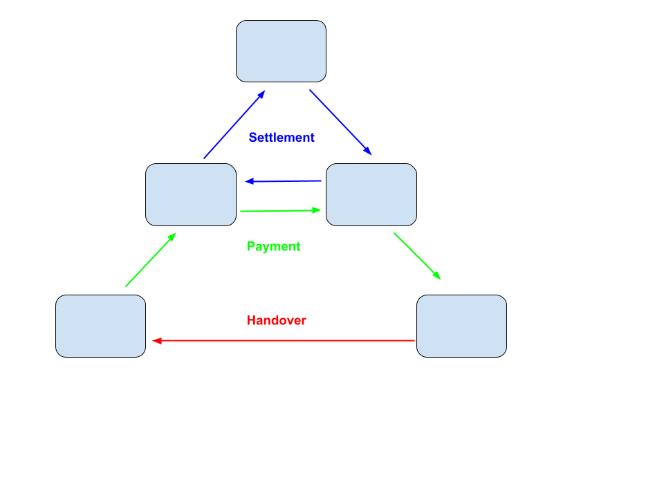
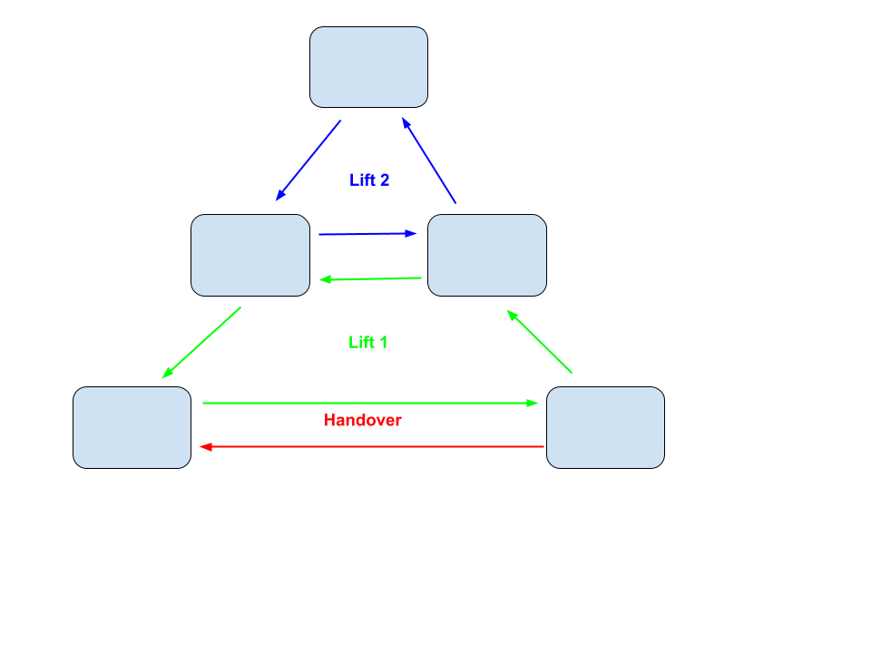

Collaborative Finance has made a lot of progress recently, and we're looking forward to CoFi 2 in Banja Luka later this year. The recent paper Constructing systems of exchange gives a good framing of how credit can be used for exchange.
In this blogpost I would like to add to this discussion by arguing that too many discussions about systems of exchange are framed around what I'll call the payment problem. Instead, I think we should talk more about the Lift problem.
Definition of the Exchange Problem
We can model the exchange problem they solve as follows: * Key entities: There are assets and agents * Ownership: An agent can own an asset * Utility: Each agent has a utility function defining how happy they are with the assets they hold, and they act rationally to increase the utility of the goods they hold * Bookkeeping: Each agent has a bookkeeping system * Agreement: An asset can be handed over from one agent to another in a trade, under some conditions of information exchange (they either trust each other, of have recourse to law to underpin this mechanism) * Question: How can we design a protocol in which these agents can rationally participate, so that global utility is maximised provided that no agent is worse off
Note that there may be a better allocation of assets than the one a payment system optimizes for. For instance if Alice likes apples and hold twelve bananas, and Bob likes bananas but holds nothing, the maximum global utility would be if Alice gave all twelve bananas away to Bob, but if she likes bananas even just a little bit, or she wants to keep them as leverage in case Bob obtains some apples to trade in the future, this global maximum will not be reached.
Definition of the Payment Problem
To understand payment systems like credit card networks, SWIFT, Bitcoin and Interledger, we should look at a specific kind of exchange problem: * through previous interactions, a multi-hop credit path has been created from agent X to agent Y * agent Y holds an asset which would be more valuable in the hands of X * how can X, Y, and all hops on the credit path between them, coordinate to update their bookkeeping so that Y is compensated for handing over the asset to X
Framed this way, * X should make sure they have "some money in the bank", meaning other agents owe them something * Y should make sure they have "a bank account", meaning a relationship with some other agent where they can build up credit * the intermediate nodes on the credit path should make sure they can quickly, conveniently and cheaply arrange a contract in which X's credit with other agents is reduces, and Y's credit with other agents is increased

A lot of research has gone into building payment systems, looking just at solving this specific problem of making credit increase for some agent in exchange for making it decrease for some other agent. As Ethan Buchman tweeted in January 2024, it is time for Collaborative Finance systems to look beyond just payments and "bring the obligations on-chain".
Definition of the Lift Problem
While I've worked on LedgerLoops on and off for years, it was amazing to meet Kyle Batement from MyCHIPs at the first CoFi Gathering last year. I will adopt the term "Credit Lift" from the MyCHIPs project to mean the (partial) netting of a number of obligations on a loop in a credit network against each other. A credit lift is thus a multilateral netting agreement that is loop-shaped in the sense that each agent involved has exactly one credit and one debit in the equation.

Why it's better
A credit lift is a more generic and more fundamental construct than a payment, since you can model a payment as a credit lift, but not the other way around.